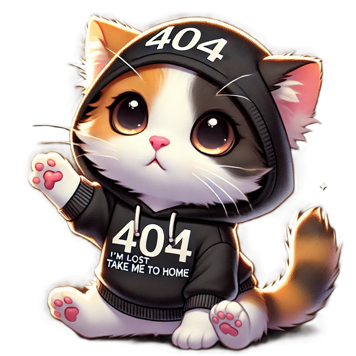

<ion-header>
  <link href="https://fonts.googleapis.com/css2?family=Poppins:wght@300;400;500;700&display=swap" rel="stylesheet">
  <ion-toolbar>
    <ion-title>No te esperábamos aquí</ion-title>
  </ion-toolbar>
</ion-header>

<ion-content class="ion-padding not-found-page">
  <div class="container">
    
    <h2>¡Ups! Perdón por no estar listos para tu visita.</h2>
    <p>¿Ahora ves por qué necesitamos más mujeres en las TIC´s?.</p>
    <ion-button shape="round" routerLink="/tabs/dashboard" class="custom-button">
      Volver al inicio
    </ion-button>

  </div>
</ion-content>
